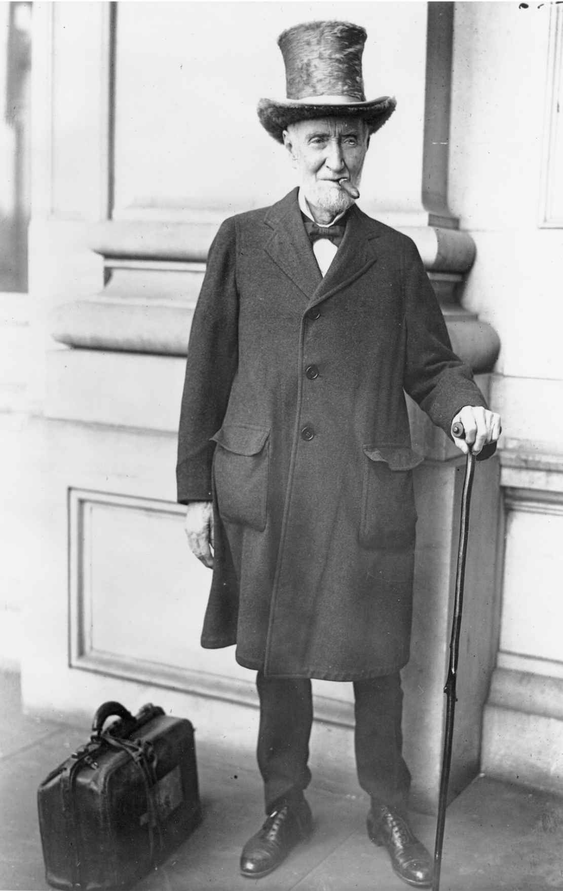
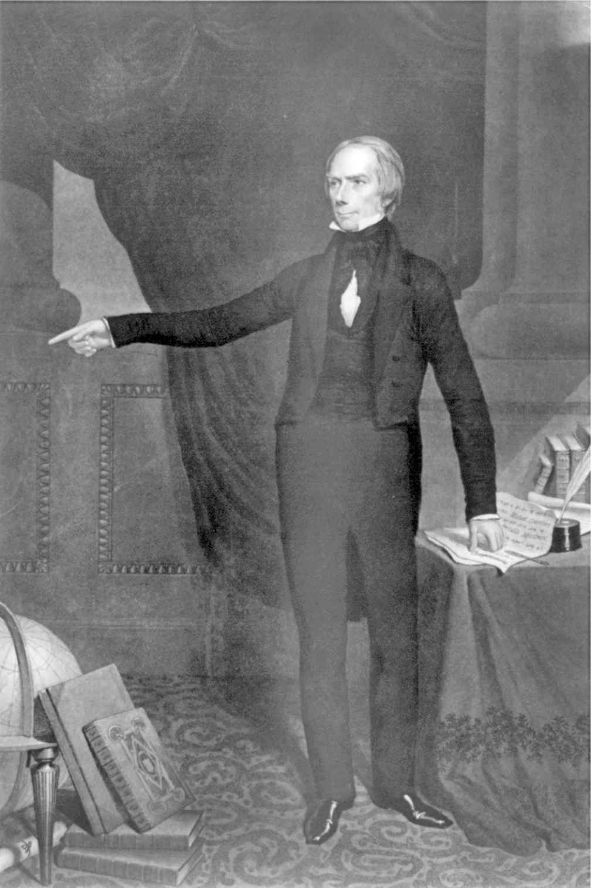

确切地讲，国会始于一场妥协。1787年于费城召开的制宪会议笃信分权可防止潜在的暴政，包括政治多数的暴政，遂精心设计立法、行政、司法分立的联邦政府，并进一步将国会分为两院。“野心必须用野心来对抗” [4] ，这是詹姆斯·麦迪逊为此做出的声辩，他料想每个分支都会小心守护各自独有的权力，防止权力过分集中。但会议围绕立法机构自身的代表制问题陷入了僵局。来自大州的代表希望国会两院都能体现出大州的人口规模：更多的人口应该得到更多的代表。小州则拒绝接受任何无法与大州平起平坐的政体。
僵持期间，制宪会议休会迎接7月4日独立庆典，任命一委员会探索解决方案。委员会通过“大妥协”化解分歧，在众议院中采用比例代表制，参议院中采用平均代表制。众议院中各州代表人数不同，但每个州都有两名参议员（宪法第一条第二、三款）。各州都不会丧失参议院中的平等地位，除非征得它们的同意，而各州对此均不会赞同。大妥协搁置了其他一些问题，其中至关重要的一项是如何就代表制和税收问题统计被奴役的非洲裔美国人口数量，但若无大妥协，宪法其余部分将形同虚设。
大妥协创建了什么样的立法机构呢？2000年选举后，拥有3500万常住人口的加利福尼亚作为最大的州，向众议院推选了53名议员。相形之下，怀俄明州凭50万常住人口只拥有1名众议员，但怀俄明和加利福尼亚都选举2名参议员。这种差异化的平衡机制使人口稀少的各州在参议院中具有较大优势。拥有全美半数人口的10个州，其代表在众议院的435名议员中占到236名，但只有20名参议员。占人口另外半数的40个州却拥有80名参议员。
宪法规定每个国会选区至少要有3万常住居民，但没有规定最高限额。每10年一次人口普查后，众议院席位会重新分配以体现人口变化。众议院由最初的65名议员稳步增长，至1910年人口普查后达到435名。众议院议事大厅变得拥挤不堪，议员的桌台只得换成剧场座位。国会担忧庞然之躯使立法进程拖泥带水，故将众议院议员人数限定为435人。每次人口普查过后，某些州将获得议席，其他一些州则失去议席。为避免众议员流失，乡村选区经年力争，导致选区规模异常悬殊。比如，曾长期担任众议院议长的山姆·雷伯恩（得克萨斯州民主党人），其乡村选区人口只有来自达拉斯市的众议员所代表选区的三分之一。直至1964年，最高法院才将“一人一票”原则应用到众议院议席重新分配当中，要求选区拥有相同数量的常住居民。
国会两院可以制定各自的规则，两院适应不同的代表制，发展迥然相异。19世纪晚期以来，更为庞大的众议院采取的规则允许多数党占据优势，前提是多数党议员在投票时众志成城。参议院的规则使占少数的一方拥有更多发言权，不论其为少数党，还是少数党中的一部分，甚或只是一位参议员。众议院越发层级分明，而参议院逐渐成为平等的机构。尽管两院差异显著，但任何议案成为法律均须两院以完全一致，甚至连标点都相同的行文予以通过。
制宪会议上放弃的一些意见原本可能促成近似于议会（parliament）的立法分支，在这类议会中，首相和内阁大臣乃立法机构成员。国会原本可能选举总统并有权以“治国不力”（maladministration）为由罢免他们，这些规则可能使总统一职近似于首相之职，使任期取决于保持国会多数。甚至有建议主张参议员终身任职，没有报酬，使参议院成为贵族院，将众议院作为平民院。
不过，国会也还是沿袭了英国议会的两院制模式。在一个多世纪的时间里，殖民地立法机构大体上分为上院或总督参事会以及民选议会。美国革命期间，一些州认为一院制立法机构更彰显平等主义，遂取消其上院。大陆会议以及《邦联条例》确立的国会也都是一院制。然而，财产持有者们担忧不受约束的民主的立法机构将转而劫私充公，这种想法为宪法注入了深层考虑。尽管众议员会由民众直接选举，参议员起初则要由州立法机构选任，再由选举人团选举总统，由此组成混合政府，以避免“过分民主”。
美国的政体明显有别于各种议会民主制。总统和各位内阁部长均不在国会中占有议席，任何分支的任一成员均不同时在另一部门任职（副总统例外，宪法为使他不至于无所事事而任命他为参议院议长，直至或除非需要他填补总统职位空缺为止）。与首相不同，美国总统在其政党于下次国会选举中不再占据多数时不会下台。因此，总统们曾时常不得不与反对党领导的国会多数党周旋。
英国广播公司记者阿利斯泰尔·库克发现，对于美国国会没有安排“质询时间”而在此期间以英国议会下院问询首相的方式就当下政策问询总统，历任英国驻美大使无不困惑不解。库克向他们解释道，各分支相互分立固然妨碍了采取这一安排，但国会拥有要求总统内阁在委员会面前接受监督的优势。他指出，“作为一种执政考问形式，国会常设委员会的全天候盘问”是首相和内阁部长在英国议会下院面对的质询和哄笑所无法同日而语的。没有议会多数党的支持，首相领导的政府将垮台，但国会多数党可以无视总统的立法提案、否决其预算案、拒绝承认其提名人选或拒不批准其政府议定的条约。
党纪在国会中时强时弱，参、众两院也各有不同，但总体上很少像在议会制下那么强大。参、众两院议员首先且主要对选民负责。政党领袖们要想报复持不同政见者并不容易，他们的投票是这些政党领袖们在随后的事务上将要仰赖的。多数党领袖或许需要求诸反对党成员以赢得选票。不过，国会领袖们几乎不必像在议会制之下那样对第三党心怀忧虑或打造执政联盟，因为各州都不会以比例代表制帮助小党派获取国会议席。甚至座席在形式上都迥然相异。与大多数议会之中主要党派相视而坐、相互对峙不同，参、众两院议事大厅的半圆形座席有助于不时实现两党联合。
其他民主国家普遍倾向于议会制。美国国会相比之下更加拖沓、烦冗、低效，但这正是宪法制定者们的初衷。他们建立这一制度为的是避免草率行事、调和舆论的任何突变、防止权力过分集中、保护公民权利并就一些艰巨的问题塑造国家共识。
宪法将“一切立法权”赋予国会，也一并规定了一长串具体的责任和禁止事项。通过授权国会制定一切“必要且恰当的法律以行使上述各项权力”（宪法第一条第八款），宪法条文甚至隐含着更为广泛的权力。以“弹性条款”著称的此项规定使国会无须通过许多新的宪法修正案，便可将其支配权延伸至大量新问题上。
国会拥有“钱袋权”，也就是为全部联邦支出拨款的独占权和为偿付支出而进行征税的责任。宪法的“贸易条款”授权国会调节各州之间以及美国与其他国家之间的贸易往来（宪法第一条第八款）。1930年代关于最低工资和最长工时的法律即源于贸易条款，如同1960年代宣布废除种族隔离。国会有权建立联邦法院系统并确定最高法院的法官人数。国会可以铸造货币并从中借款，可以批准设立邮政局并修建驿道，可以规范移民并针对破产和版权制定法律（宪法第一条第八款）。经三分之二多数赞同，国会可以将宪法修正案交予各州批准（宪法第五条）。
国会对于外交和军事政策的影响不那么明确。尽管总统如今以军队总司令的名义（宪法第二条第二款）提出了扩张性权力主张，但国会拥有召集陆海军、为国防提供经费和宣战的权力（宪法第一条第八款）。美国曾多次未经正式宣战便参与战争，而发动战争的权力已经成为政府各分支之间争夺最为激烈的领域。
旨在呈现法案如何成为法律的流程图是整齐有序的，与此不同的是，经由国会立法通常遵循着复杂的路径。大量提案被捆绑成一揽子立法建议，支持者和反对者均须接受这一策略而别无他选。这种捆绑使国会和总统双方更加剑拔弩张，总统必须签署或否决这些“综合”法案。多数法案呈交到总统案头之际已经获得大量支持，致使总统很难否决它们却不遭遇不良政治反应。
由于各种对立派系的冲击，立法者们时常面临艰难抉择。任何单独一位议员都无法原封不动地促成一项重大法案在国会获得通过；若无危难当头，总统们也无法指望实现一切期待。深陷大萧条之时，富兰克林·D.罗斯福提交的紧急银行法案在当天上午获得众议院批准，参议院在下午予以通过，罗斯福在当晚给予签署。国会当中所有人都没有时间通读法案。他们在绝望中投票表决以使其成为法律，所幸它有效地恢复了公众对银行系统的信心。以相似的仓促，国会知晓大众渴望两党迅速协同响应，便于2001年“9·11”恐怖袭击后一周之内通过了《美国爱国者法》（HR 3162）。然而一段时间之后，有人却情愿国会曾深入考量其中影响公民自由的若干条款。大部分法案需要更长时间，它们必须在组织、程序及党纪存在广泛差异的两院中冲破种种障碍。
在众议院的每次会议上，警卫官都会将众议院权杖——顶端为美国秃鹰、长40英寸的银杖——带入议事大厅，这一安排源于古罗马，经英国议会传承下来。权杖被放置在议长演讲台旁边的基座上，以示众议院正在召开常规会议。当众议院作为全体委员会时，为放宽规则并加紧工作，权杖会被安放在一个较低的基座上以示变化。一旦群情激奋或发生骚动，警卫官便将象征众议院威信的权杖高高举起以恢复秩序。规模更小、更加肃静的参议院从未发现有使用权杖的必要性。
众议院如今由435名民选议员、1名来自波多黎各自治邦的属地居民代表以及5名来自各属地和哥伦比亚特区的委任代表组成。委任代表可以在各委员会而非众议院议场上投票表决。如同绝大多数州立法机构，民选议员使用电子投票系统投票，他们将一张投票卡插入议事大厅46台投票箱中的一台，并按下“赞成”、“反对”或“出席”。记者席上方的大型发光计数屏为投赞成票者亮绿灯，为反对票亮红灯，为出席票亮琥珀色灯。侧门上的电子计数器显示对法案投赞成票和反对票的票数，以及剩余投票时间。议员们成群结队地蜂拥而入，在议场上东奔西踱，为己方的有效投票欢呼雀跃。甚至在辩论期间，众议院看起来也始终是一派繁忙的景象。议员们起身在议事大厅前下沉的发言席上发表简短但时常颇为尖锐的言论，法案负责人落座的席位装有话筒，使他们的发言能够在嘈杂声中被众人听到。
为在美国探寻民主制度，法国政治观察家亚历克西·德·托克维尔曾于1832年探访众议院，却为其间辩论的粗鄙大为震惊。在他看来，众议院代表着下层民众。在参议院旁听席，他听取了向聚精会神的议员们发表的庄重演说，随即将其认定为贵族阶层。为反驳这种看法，曾在参、众两院任职，来自密苏里州的托马斯·哈特·本顿指出，许多参议员曾经在众议院任职，两个机构因此并非代表不同阶层。规模较大的众议院始终比较小的参议院更为喧闹、繁忙、高效和激进。
众议院逐渐发展为诸多团体的混合体，包括政党大会、委员会、议题导向的党团、州代表团、新议员班子、祈祷早餐会，此外还有若干其他方式用以凭借数量打造实力。众议院的三层发言席从底层的普通议员至顶层的议长，恰如其分地反映着这个机构的建制。众议院议长起初效仿英国下院议长，担任中立的主事官员。然而，来自肯塔基州强悍有力、雄心勃勃的亨利·克莱于1811年成为议长后，立即使这一职位更具政治色彩，议长于是也成为多数党领袖。凭借政党大会和幕后功夫，议长无须投票且通常不参与议场辩论便发挥着领袖的作用。为向议长和众议院多数党配备代言人，逐步发展演变出了多数党领袖一职（最初由议长任命，随后由多数党大会选举产生）。议长要依靠多数党领袖为议事大厅准备每周的工作日程，再宣读法案以对其进行辩论和投票表决。
在内战之后的工业主义时代，众议院使其委员会及议场程序实现现代化，为的是处理日益复杂的经济与社会问题。这些问题促使委员会制度本身形成更为有序的规则和专业分工。议员们待在办公室的时间开始延长并以在国会的任职为职业生涯，使资历成为扩大影响力并出任委员会主席的衡量标准。（政治学家们将这种发展称为国会的“制度化”。）
1880年，众议院就规则事务成立了一个新的常设委员会，这一委员会对议长的权力相当重要。由此开始，每逢宣读一项颇具争议的法案，规则委员会就会规定辩论时间以及可以向议场提出的修正案类型。这使议长及多数党领袖得以大体了解法案的构成以及投票表决的时间。19世纪晚期的议长们负责主持规则委员会，并借其管理难以驾驭的众议院。进步时代，议长约瑟夫·G.坎农（伊利诺伊州共和党人）凭一己之力阻止改革举措。叼着雪茄的“乔叔”坎农有着盛气凌人的做派，终于触发改革者们的反抗，他们于1910年强行推动表决，撤掉了议长在规则委员会中的职务。规则委员会主席于是获得自主权，时常远离其政党的议程。当1961年保守的民主党人与共和党人共同主导规则委员会之际，自由主义者们试图推翻早期的改革。议长山姆·雷伯恩以超乎寻常的个人威望致力于壮大规则委员会成员队伍并削弱主席的权力。议长从此不再主持委员会，但由他们委派多数党议员，使委员会转变为领导层的代理人。
1970年代，民主党大会的自由派改革者们剥夺了众议院筹款委员会向各委员会委派议员的权力，将此权力转交政党筹划指导委员会，置于政党领袖的掌控之下。议长吉姆·赖特（得克萨斯州民主党人）进一步巩固领导层的权力，直至少数党保守派领袖纽特·金里奇（佐治亚州共和党人）提起道德指控击败了他。1995年，共和党结束40年少数党地位重新成为多数党时，议长金里奇沿袭并扩大了赖特把权力集中于个人控制之下的做法。众议院共和党人为委员会主席设定任职期限，授权议长跨过其所在政党的资深议员，挑选更为志同道合的议员出任主席。

图1 约瑟夫·G.坎农，1903—1911年任众议院议长，任期内颇具影响力
珍妮特·兰金（蒙大拿州共和党人）成为首位服务于国会的女性众议员90年之后，南希·佩洛西（加利福尼亚州民主党人）“冲破大理石天花板”，于2007年担任议长。尽管在意识形态上与金里奇相左，她却延续了金里奇的集权倾向。议长佩洛西成为所在政党的门面和喉舌，频频在众议院议场中就各类问题发言。她不经委员会同意将富有争议的立法直接带到议场以压制委员会主席。参议院多数党领袖哈里·里德（内华达州民主党人）不无赞赏地评论道：“她在以铁腕管理众议院。”
由于各项规则有利于选票在握的一方，众议院少数党领导层始终在逆境中前行；众议院多数党无须费心顾及少数党的意见，便可占据上风。少数党领袖反过来致力于安排少数党煽动对手并吸引选民。少数党的工作在很大程度上是使多数党保持坦诚，他们提出的多种立法选择几乎没有机会获得通过，却可能引起媒体的注意。尽管向议席提供修正案的能力十分有限，少数党还是试图推动投票。对他们来说，一种可行策略从来都是动议向委员会重新提出议案。由于重新提出的动议可能被修改，少数党也就将其作为提出某种修正案的工具，这种修正案吸引舆论，但多数党不希望予以通过。一旦多数党投票否决该项修正案，少数党便拥有了一项竞选议题。
众议员引以为豪地自称“人民的众议院”，因为该机构是联邦政府中唯一一个始终通过直接选举形成的部门。任何人都不能被委任到众议院。如果某位众议员离世或辞职，所在州会举行补缺选举以填补空缺（这与参议院空缺有所不同，多数州长可向参议院发出短期任命）。众议院每名议员每两年参加一次选举，并在每届新国会伊始重新宣誓就职。作为全新的开始，多数党可能在国会召开之初通过多数票决，修订众议院规则，也可能对程序做出重大调整，尤其新晋多数党甫一上台更急于扭转以往的运作方式。
两年的选举周期（世界各国立法机构中的最短任期）使众议员永无止境地忙着竞选和筹集资金。每次人口普查后议席按比例重新分配，都需要各州重新划分国会选区边界。州立法机构的多数党无一例外地以保证“安全选举区”的方式对登记选民进行分类，由此划分出有利于本党候选人的选区。他们的做法是“打包”——将反对者集中到一个选区，或“打散”——将反对者尽可能分散到多个选区，以此方式削弱其影响。形容这类举措的一个众所周知的称呼“格里蝾螈”（Gerrymandering）可以追溯到1812年，当时在马萨诸塞州立法机构中，州长埃尔布里奇·格里所属政党拼凑出一些奇形怪状的国会选区。一位社论漫画家为选区图加上蝾螈的头颅和翅膀，并以州长的名字为其命名。这个称呼及这项举措就此保留下来。加上筹款和知名度方面的压倒性优势，如今众议院在任议员享有96%的连任率。
1791年一项未获通过的宪法修正案本可以将每个国会选区的人口限定在5万人。如果这项修正案获得批准，如今众议院大约会有6000名众议员。然而，当今的国会选区通常拥有大约69万居民。批评人士认为人口的这种增长已经弱化了一度存在过的那种选民联系，他们遂建议扩大众议院议员队伍。专栏作家乔治·威尔曾发问：“为何不是1000名众议员？”但衡量进行变革的各种理由后，他承认如此庞大的机构其“十足的臃肿”便很可能造成阻碍。
每当众议院议员打算竞选参议员时，议长山姆·雷伯恩就会埋怨道：“你为什么要那样做？你已经在华盛顿了。”雷伯恩是有道理的。两个机构的议员薪酬相当，众议员尽管更加频繁地参加选举，却有更为稳定的位置，几乎可以保证连任。然而，作为一名参议员会拥有更高的声望和个人权威。由于参议院大部分工作的进行都需要全体一致同意，参议员一俟上任便获得权力。参议员于是能吸引媒体的更多关注，而这可以激发竞选总统的雄心。（已经竞选总统的所有参议员当中，只有三位直接进入白宫，其余则“背着过多的包袱和妥协”，这是由记者们所谓“信息驱动的简单化”总统竞选造成的。）
参议员占据着议事大厅中具有历史意义的桌位，他们将姓名与杰出前任议员的姓名并排刻在桌子抽屉中。他们通过呼声进行投票表决（时长15至20分钟，大致与众议院电子投票时间相当）。参议员有更多机会在议场上修改法案或阻止令人不快的行动。尽管众议院的规则对组织化的多数党更为有利，参议院的规则却赋予少数派更多力量。
在建立两院制问题上，詹姆斯·麦迪逊曾将参议院视为“必要的防护”。参议员由州立法机构选举产生，任期六年，每次国会选举仅有三分之一参选。麦迪逊相信，这会使参议院远离多变的公众舆论，从而可以“比人民的众议院更加冷静、有序、智慧”地运行。19世纪后期流传的一则或许并不真实的故事抓住了参议院的本质。故事称托马斯·杰斐逊在宪法被采纳后从法国返程，他询问乔治·华盛顿新政府为何需要参议院。华盛顿则问：“你为什么把咖啡倒入茶碟？”杰斐逊答道：“为了冷却。”华盛顿则说：“这恰恰是我们建立参议院的原因，就是为了使政府冷静下来。”
杰斐逊在副总统任内通过编辑一部关于议事规则的手册（也得到众议院的采纳），为参议院鲜明的风气做出了贡献。他认为，“秩序、礼节和规则”会催生“一个庄重的公共机构”。政治事务难免导致群情激昂，但得体的语言可以缓和紧张氛围。因此，参议员不应互相直呼姓名（“伟大的……州的杰出资深参议员”），辩论时，需面向主事官员发言而不是彼此相向（这就是他们在发言中插入“议长先生”或“议长女士”的原因）。他们不能互相辱骂、质疑彼此的动机或贬低对方所属的州。任何违反规则之人都可能被勒令落座并禁止参与当日随后的辩论。资深议员会将资历较浅的议员带到一边，建议他们在议事大厅中保持得体的举止行为。
立法审议蜗牛般的步调可能会使那些急于颁布法律并改革政府做法的新晋参议员备感挫败。那些离开商界或曾担任州长的参议员已经习惯于自主地确定日程。在参议院中，他们面对的则是无休止的讨论、辩论和延期。前州长亨利·贝尔蒙（俄克拉荷马州共和党人）认为参议院令人沮丧。在他看来，“相比于担任州长的四年时间里所承担的责任、工作量以及激动人心的感受，服务于美国参议院就如同一直在观察树桩腐烂一样令人窒息”。
美国参议院被称为所有民主政府中最有权威的“上院”。这个标签在第一届国会期间只不过用以描述其所处地点，即联邦大厅中较大的众议院议事大厅楼上。公众的注意力起初更多地集中在众议院，而参议院在很大程度上致力于完善众议院通过的法律。在六年的时间里，参议院集会完全保密，甚至在敞开大门之后受到媒体的关注也不及众议院。1806年，参议员威廉·普卢默（新罕布什尔州联邦党人）愤愤不平地声称，参议院旁听席鲜有参观者，而众议院旁听席始终座无虚席。
参议院向更具权威的机构转变始于一项妥协案，这项妥协案旨在缓和牵动人心的西部准州奴隶制问题。当密苏里作为蓄奴州加入联邦一事敲响警钟之际，1820年妥协案通过承认缅因为自由州，在北方和南方之间维持了平衡。这项协议划出一条跨越全国的界限，禁止界限以北地区蓄奴，同时成对地接纳来自两个区域的新州。这意味着，在当时争议最大的问题上，参议院将分裂成势均力敌的两派。随着公众将注意力转向参议院，亨利·克莱（肯塔基州辉格党人）、丹尼尔·韦伯斯特（马萨诸塞州辉格党人）以及约翰·C.卡尔霍恩（南卡罗来纳州民主党人）等雄心勃勃的众议员也纷至沓来，他们的雄辩开创了参议院辩论的黄金时代。
各准州排着队成为新州，参、众两院也随之人满为患。1810年，共有34名参议员和142名众议员，这是他们首次占据国会大厦二楼典雅的议事大厅，但到了1851年，参议员已达到62名，众议员更达234名；国会遂授权修建国会大厦两翼，为的是容纳规模更大的议事大厅。1859年，66名参议员从原来的议事大厅迁往新址，一行人员当中包括将在联邦和邦联双方内阁及军方任职的人员。

图2 “伟大的妥协家”亨利·克莱曾任众议院议长及其所属政党在参议院的领袖
内战后的工业革命见证了美国经济的扩张和联邦政府的扩充。处理关税、税赋及拨款事务的各参议院委员会纷纷壮大起来，富人们竞相争取参议院议席以左右经济发展。进步时代，扒粪记者指责参议院行事越来越倾向于特殊利益群体，而非谋求公益。一些指控揭出部分州议员确曾收受贿赂再投票给参议院候选人；州立法机构的内部纷争致使一些参议院议席在整届国会期间始终保持空缺。美国的进步主义者们没有采用削弱上院权力的欧洲模式，而是将选举参议员的权力从立法机构转交给民众直选。改革者们希望通过这种转变绕开不时控制立法机构的腐化的政治机器。宪法第十七条修正案在1913年获得批准，选民在次年对全部正在竞选的在任议员进行重新选举。但州立法机构并没有由此远离公众舆论。
直接选举最终却对它没有改变的部分起到重要作用。第十七条修正案使参议院全部原有权力完好无缺地保留下来。它使参议员更贴近其所属各州的民众，这些选民的投票是他们再次参选所需仰赖的。一些评论家以修正案削弱各州与联邦政府间联系为由主张予以撤销，但选民再不可能让出选举联邦参议员的权利。由于每次选举都有三分之二参议员继续留任，参议院自称“连续性机构”。参议院不像众议院一样在每届新国会伊始通过多数票决制定新规则，这使参议院规则的转变更为复杂且不常为之。学者型参议员亨利·卡伯特·洛奇（马萨诸塞州共和党人）评论道：“政府来而复往，众议院聚而又散，参议员变动不居，唯参议院永驻国会大厦，一直井然有序，自1789年以来保留至今始终浑然一体。”
参议院根据为数不多的常设规则运行，这些规则经一致同意经常会予以搁置。曾任参议院议事规则专家的弗洛伊德·里迪克坚持认为，规则原本是完备的，“如若他们改变了其中的每一项，规则也将是完备的”。他的意思是，参议院采纳适合其需要的规则，如果规则不再有效，参议院将动用宪法权力予以全部改写。参议院规则允许其比众议院拥有更多的辩论和延期时间，这致使任何事务的达成都需要更多的磋商和妥协。由此造成的缓慢步调几乎使每一个人备感挫败，但也避免了草率地颁布有缺陷的法案。
众议院之治源自主持者，参议院之治则源自议场，由参议员而非主事官员治理。参议院议长（美国副总统）不会打破偶有的联系，其仅有的权力都来自参议员的自愿赋予。副总统可以提出议事规则，但参议员可通过简单多数投票将其推翻。副总统只有经参议院准许才可在其中发言。第一任副总统约翰·亚当斯在首届国会辩论中频频插话，以致朋友们告诫他不要引起争论，亚当斯便安静下来。诸位副总统一直在政府和国会间充当联络人，但副总统斯皮罗·阿格纽犯下在议场围堵参议员拉票的错误。那位愤怒的参议员尽管来自阿格纽所属政党，却公开宣称，若副总统依然如故，他将投票支持对手。于是，通过强制和自愿承担的种种限制，副总统始终以中立姿态主持参议院，且多数情况下只在仪式性场合出现在议事大厅。
在副总统缺席的情况下，参议院会选举一位临时议长，通常是多数党资深议员。尽管这一职位在总统继任行列中排在第三位，却一直由八九十岁的参议员担任。参议院的实际领导者——多数党领袖——并没有在宪法中提及，原因在于宪法起草之际政党尚未出现。19世纪，参议院在没有议场领袖的情况下运行，由多数党大会主席从立法日程中宣读法案交由辩论。1913年，伍德罗·威尔逊总统说服参议院民主党指派一位议场领袖掌管其立法议程，约翰·沃斯·克恩（印第安纳州民主党人）于是成为首位多数党领袖。自1937年以来，两个政党的议场领袖都要求获得参议院议事大厅头排正中的席位，他们也被给予首肯权。当多位参议员同时请求准予发言时，主事官员将首先请多数党和少数党领袖掌管议场，这也就使他们获得一项议事规则上的重要优势。
法案的反对者为阻止法案获得通过，可能会把控议场并阻挠议事（filibuster）。这个术语源于荷兰语中表示“海盗”（freebooter或pirate）的词，用来形容通过控制议程反对多数党的少数党参议员。如果投票得以举行，多数党将占有优势，因此阻挠议事的少数党议员要阻止投票。好莱坞电影《华府风云》（Mr.Smith Goes to Washington ）将阻挠议事者的公众形象刻画成把持议场数小时、声嘶力竭地发表讲话的参议员。如今，阻挠议事经常无须出声，只需有人运用规则使参议院困于程序上的节点，又或困于无法实现结束辩论所需60票的终止辩论（cloture）动议。
直至1917年，当威尔逊总统所谓的“一小撮执拗之徒”阻挠有关武装美国商船以应对德国潜艇战的议事进程时，参议院尚无终止辩论规则。战争时期的氛围促使参议院设立终止辩论规则，凭借这项规则，达到三分之二赞成票即可结束辩论。在随后的半个世纪当中，阻挠议事几乎成为试图阻止民权立法获得通过的南方参议员们采取的唯一手段。直到要结束一次长达57天的针对1964年《民权法》的阻挠议事行为时，终止辩论规则才得到采用。1975年，参议院的自由主义者们将终止辩论所需赞成票从三分之二（67票）减少到五分之三（60票）。由于各党几乎都达不到60票的多数票，纯粹按照政党阵线投票也就不足以通过争议性法案。
人们对阻挠议事的看法取决于其所属政党是多数党还是少数党。多数党指责蓄意阻挠，少数党则将其作为避免遭到压制的手段而加以维护。因阻挠议事者反对司法任命而备感挫败的参议院多数党领袖比尔·弗里斯特（田纳西州共和党人）曾威胁采用“核选项”，凭借这一手段，主事官员可以裁定辩论拖拉并强制举行投票。如果少数党提出抗议，参议院凭借多数赞成票可以维持主事官员的裁决。这可以有效地将终止辩论降为简单多数票决。以“核”命名的原因在于它可能对参议院的传统造成致命打击。反对者称，核选项将终结强有力的辩论，使参议院成为另一个众议院，而一群跨党派的资深参议员找到了一种避免采取核选项的折中方案。
由于规则鼓励审慎、合作并构建共识，多数党无法将少数党贬为局外人。多数党领袖通过从日程中宣读法案来规定议程，但少数党领袖握有大量可以用来阻拦行动的合乎议事规则的武器。因此，除非两党领袖达成某种协议，否则参议院不会形成任何结果。即便如此，任何一党的反对者都可能使他们的努力付之东流。参议院的程序使其成为一个“协商机构”。众议院的议员们在通过一项强有力的法案后，会因参议院达成的妥协而恼火。但众议院少数党时常感谢参议院少数党能够有力地改变或完全毁掉一项法案。参议院领袖经常向众议院中的同僚们提醒道，两院议事大厅的运作方式互不相同，而参议院多数党不能为所欲为。参议员阿伦·斯佩克特（宾夕法尼亚州共和党人/民主党人 [5] ）将参议院规则比作无政府状态，而认为众议院规则堪比专制主义，并补充道，要确定哪一个更好“是个相当困难的抉择”。
1912年，时任众议院议长在卡尔·海登（亚利桑那州民主党人）初次当选时向他讲道：“年轻人，我希望你记住，你无法一切都按照自己的方式行事。国会颁行的任何一项重要法律无不是妥协的结果。”直至1969年离开国会前，海登都乐于向新议员重复这段话。后来的议长山姆·雷伯恩也不约而同地建议新议员：“如果你想前行，就要让步。”
立法过程是一场旷日持久的协商谈判。强者赢得选举进入国会，但在这里做成任何事情都需要他们协同工作。他们必须调整个人看法以获得多数支持，通常是将他们的目标融入充斥着其他条款的更为宏大的计划。他们必须建立同盟、争取民众关注、筹划议事策略、展开辩论并讨价还价，以此储备足够票数，从而使法案得以通过。这仅仅是为了清扫一院的道路。在另一院中，这一程序必须重新来过。随后，法案的两个版本必须在交予总统前加以协调。
让步、协商和两党关系对于外交政策也是至关重要的。伍德罗·威尔逊总统没能说服参议院批准结束第一次世界大战并建立国际联盟的《凡尔赛和约》，部分原因在于他没有使参议员们参与协商。第二次世界大战后，民主党总统哈里·杜鲁门倚重参议员阿瑟·范登堡（密歇根州共和党人），促成了两党一致的外交政策。范登堡在本人的观念从孤立主义转向国际主义后，力促两党在杜鲁门的冷战计划下团结起来。为使参议院批准旨在重建战后欧洲的“马歇尔计划”，范登堡建议杜鲁门政府不要一次性索取170亿美元支付一项为期四年的项目，而是仅仅争取该项目第一年所需拨款，进而缩小了反对者的攻击目标。他体会到，立法是“可能性的艺术”，无论法案本质如何，都需使其在政治上可行。
时常被称为参议院“绝妙搭档”的爱德华（特德）·肯尼迪（马萨诸塞州民主党人）和奥林·哈奇（犹他州共和党人）虽然在意识形态上相去甚远，却成功地共同发起一些著名的医疗立法。哈奇将此归功于肯尼迪愿意“与志同者合作，即使他们对如何实现这些目标有不同看法”。然而，过多妥协也有削弱有价值的观念并造成低效立法的危险。一些议员不肯为了获取影响力而放弃个人原则。长期供职于参议院的工作人员霍华德·舒曼观察发现，议员在国会中的声誉是否具有持久性取决于其一心谋权还是一意谋事。有能力震慑同僚，不能保证不被遗忘。相反，能够经受时间考验的是那些以问题为导向的议员。
1950年曾发生过一场反抗政党主张和公众舆论的著名事件，玛格丽特·蔡斯·史密斯（缅因州共和党人）发表《良心宣言》，反对约瑟夫·R.麦卡锡（威斯康星州共和党人）等国会反共调查员利用“恐惧、无知、偏执和诽谤”行事。另一场无畏的抗争发生在1995年，参议院拨款委员会主席马克·哈特菲尔德（俄勒冈州共和党人）的投票使其政党丧失了需要用以批准宪法“平衡预算修正案”的三分之二差额。哈特菲尔德认定这项迂回的修正案可能引发的问题会超过能够解决的问题，便投出反对票，尽管此举危及他的主席职务。在此之后，国会便设法在没有这项修正案的情况下平衡预算。
一如詹姆斯·麦迪逊在《联邦党人文集》中写到的，社会由“多种利益集团、党派和教派” [6] 组成，难以建立同盟以形成多数派，这降低了多数人践踏少数人权利的危险。国会反映了麦迪逊对于互相竞争的个人利益能促成多元性的洞察。为使法案获得通过而达成妥协的议员们恳请同僚不要“追求完美反倒一事无成”。2008年，一项曾遭总统否决的重要农业法案获得通过，某位支持者承认这项法案并不完美，他希望一些条款并没有被包括在内。他解释道：“这是一项如同所有农业法案一样的宏大立法，我们必须达成妥协才能使如此宏大的法案获得参、众两院的通过。”批评人士可以指责这项立法为“政治分肥”，又或指责其乃地方主义操纵国家政策，但起草者设计的一揽子内容尽可能满足了每个地区的生产者和消费者的广泛需求。这正是代议制政府的本质所在。